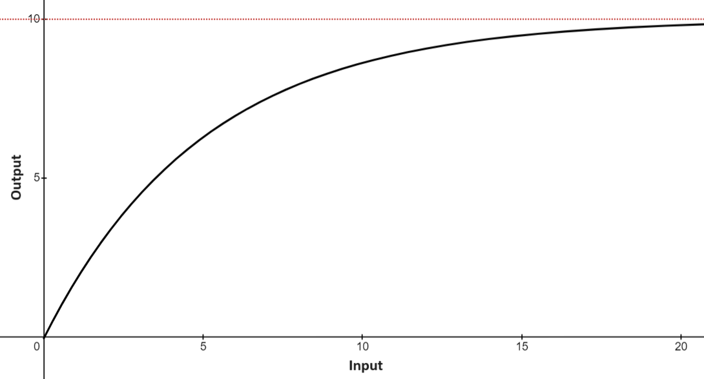

Law of Diminishing Returns
June 2024 ‒‒‒‒‒‒‒‒‒‒‒‒‒‒‒‒‒‒‒‒‒‒‒‒‒‒‒‒‒‒‒‒‒‒‒‒‒‒‒‒‒‒‒‒‒‒‒‒‒‒‒‒‒‒‒‒‒‒‒‒‒‒‒‒‒‒‒‒‒‒‒‒‒‒‒‒‒‒‒‒‒‒‒‒‒‒‒‒‒‒‒‒‒‒‒‒‒‒‒‒‒‒‒‒‒‒‒‒‒‒‒‒‒‒‒‒‒‒‒‒‒‒‒‒‒‒‒‒‒‒‒‒‒‒‒‒ minute read

As shown by the graph above, The Law of Diminishing Returns describes how increasingly inputted resources produce gradually diminishing returns. Initially a constant input of resources will create an equivalent resource output. However, as you input more and more resources, this initially equivalent output gradually diminishes.
Other guises Too many cooks Third law of Thermodynamics Law of Diminishing marginal utility.
Key relationship between two graphs Input vs Output Input vs Output/Input
This law applies to every system imaginable, and in one way or another governs every facet of the world around us. getting less out of some system the more times you put in a constant amount. These include velocity, temperature, population Let me consider 13 examples to prove this to you.
Population
Drug Tolerence
Alcohol, coffee, prescription drugs.
Weight Loss
Speed of Light
Absolute Zero
Infastructure
Quality
Machine
Population
Hiring
Relationship
Number System
Search
Yahoo for example became too big to be browsed, lost its signaling power, and reached the point where Google was better. The line between curator, compiler, and cataloguer is thin and there is a natural invisible asymptote – diminishing returns on more data over time. https://sariazout.mirror.xyz/7gSSTJ96SEyvXeljymglO3zN4H6DCgVnrNZq8_2NX1A Diminishing marginal utility of data.
Exercise
Business
Aptitude
Exponential graph - aptitude Aptitude is how long it takes you to learn something. Speed at which you can do a conplete loop of production This can’t increase linearly though, or you’d be superhuman in no time. There’s a half life to it. Your first short story takes 10 days to write. The next one 5 days, the next one 2.5 days, the next one 1.25 days. Then 0.625 days, at which point you’re probably hitting raw typing speed limits. Limit of how fast you can write Rather than fix the obvious next bottleneck of typing speed, you might level up and decide to (say) write stories with better developed characters. Or illustrations. So you’re back at 10 days, but on a new level. https://www.ribbonfarm.com/2021/07/29/mediocratopia-10/
One major conclusion drawn from the Law of Diminishing Demands is that it is impossible to achieve 100% efficiency in any system. Beyond quantifiable, the Law of Diminishing Demands also explains more abstract limits, explains why true perfection is impossible.
One important implication of the second and third law is that it is impossible to reach 100% efficiency within a system, or within any exchange between systems. Outside of heat engines and by extension pretty much all machinery, isn't this true everywhere you look? No economy, no human mind, no organism, no social network, no business can ever be 100% efficiency. Likewise, no trading, no interaction, no symbiosis, no virtual connection, no business deal can be 100% efficient either. The reason this is true is due to either a natural limit in place within the system, or the inhibition due to forces of resistance like friction or inertia.
What determines this natural limit. Natural limits within any system Takes what would be a linear or exponetial relationship and adds a limit Limiting number is the Godel number of each system Because there is no such thing as a perfect number system, there can be no such thinf as a perfect system; no system can ever be complete. There will never be a conplete set of universal laws. Within any given system there exists a perfect value which is impossible to reach.
Under all its guises, The Law of Diminishing Returns is truly a universal principle.
Ten dollars will get you ten dollars worth of stuff. Ten minutes of excerise will give you ten minutes worth of calories burned. Ten shots of .
https://www.eugenewei.com/blog/2018/5/21/invisible-asymptotes Two types of asymptotically diminishing returns. S curve and C curve. S curve includes business life cycle. The upper limit where growth flattens out Innovation adoption life cycle. Reaches technological limit. Every business will reach a invisible asymptote - the point where customers are unsatisfied, or a competitor, keep adapting to meet customers needs Need feedback from customers to Never reach perfect user experience Personal asymptotes They ruthlessly and expediently flush them out. By discovering their own limitations early, they are also quicker to discover vectors on which they're personally unbounded. Product development will always be a multi-dimensional problem, often frustratingly so, but the value of reducing that dimensionality often costs so little that it should be more widely employed. Economics: Law of Diminishing Marginal Returns Graph: Total Output vs. Quantity of Input Description: In production, as more units of a variable input (like labor) are added to fixed inputs (like machinery), the additional output produced from each new unit of input eventually decreases. Marketing: Advertising Effectiveness Graph: Sales/Conversions vs. Advertising Spend Description: Initially, increasing advertising spend leads to higher sales or conversions, but after a certain point, the additional spend results in progressively smaller increases in sales. Fitness: Training Intensity and Performance Improvement Graph: Performance Gains vs. Training Hours Description: When training for sports or physical fitness, initial increases in training hours lead to significant performance improvements. However, beyond a certain point, additional training yields smaller performance gains and may eventually lead to overtraining. Project Management: Effort and Project Completion Graph: Project Progress vs. Time/Effort Spent Description: As more time and effort are put into a project, the progress made initially increases rapidly, but the rate of progress slows down as more effort is added. R&D: Research Investment and Innovation Graph: Number of Innovations vs. R&D Investment Description: Initially, increasing investment in research and development results in more innovations, but after a certain level of investment, the number of new innovations per additional investment dollar decreases. Health: Medication Dosage and Effectiveness Graph: Health Improvement vs. Dosage Description: Increasing the dosage of a medication can improve health outcomes up to a point, after which further increases in dosage have diminished effects and can potentially cause harm. Agriculture: Fertilizer Use and Crop Yield Graph: Crop Yield vs. Amount of Fertilizer Description: Adding fertilizer increases crop yield, but beyond a certain amount, the yield increases slow down and can eventually plateau or even decrease if over-fertilization occurs.How to avoid diminishing returns. Novelty.
Novelty is anything new and therefore unfamiliar to your human experience.
On top of this, novelty is also the primary inducer of wonder .
.
Without novelty, all content would have the exact same format, style, design, prose and ideas. All ideas are the worst idea if they are the same idea. Instead, novelty allows for uniqueness and differentiation between ideas1It is important to note the difference between novelty and orginality. Though novel ideas do encompass truly original ideas, novel ideas also include existing ideas which are presented in an entirely different way..
← Creating Quality